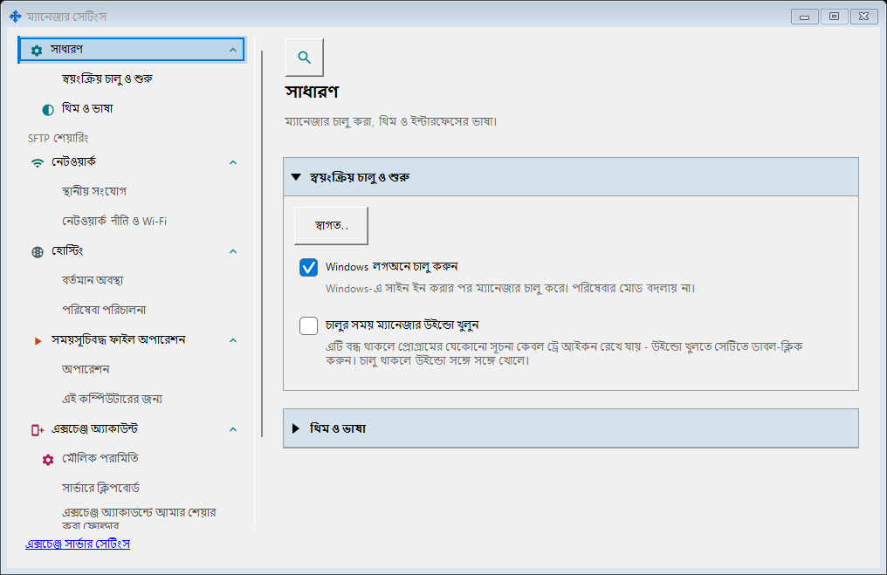
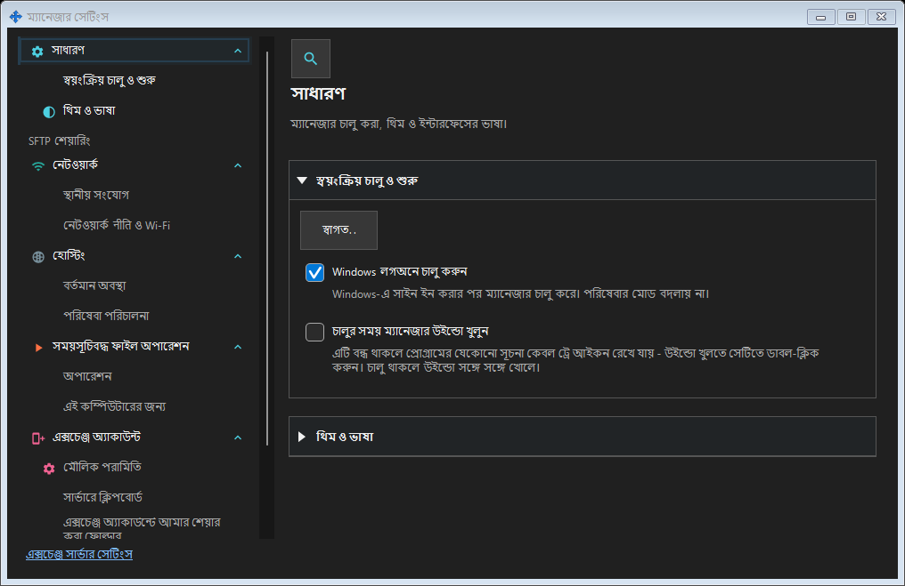
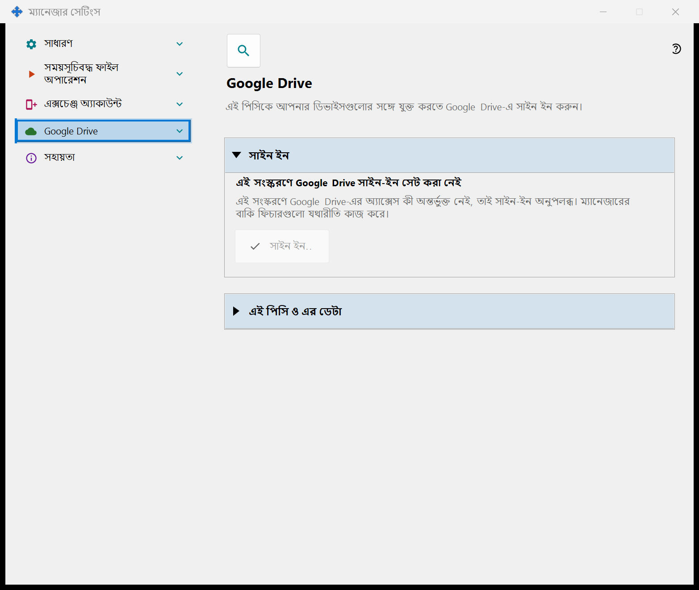
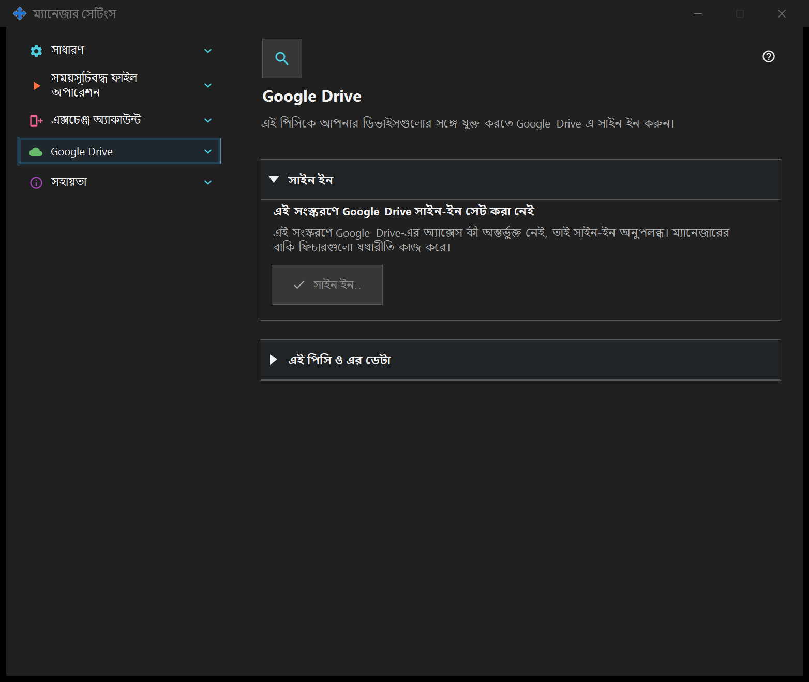

ম্যানেজার সেটিংস
ম্যানেজার সেটিংস
এটি কীসের জন্য
চালু হওয়া, থিম, ভাষা, দূরবর্তী অ্যাকাউন্ট, প্রকাশনা, ক্লিপবোর্ড ও নির্ধারিত ফাইল কাজ ম্যানেজারে থাকে। স্থানীয় সার্ভার প্রয়োজন নেই। SFTP শেয়ারিং উপাদান ইনস্টল থাকলে তার পৃষ্ঠাগুলো এই উইন্ডোতে একটি দল গঠন করে।


এই ক্রমে
ট্রে বা উপাদানের লিংক থেকে খুলুন। উইন্ডো খোলা বা বন্ধ করা সার্ভার চালু বা বন্ধ করে না। দূরবর্তী প্রবেশে স্থানীয় সার্ভার লাগে না।
উপাদানসমূহ
ম্যানেজার সেটিংস
চালু হওয়া, থিম, ভাষা, দূরবর্তী অ্যাকাউন্ট, প্রকাশনা, ক্লিপবোর্ড ও নির্ধারিত ফাইল কাজ ম্যানেজারে থাকে। স্থানীয় সার্ভার প্রয়োজন নেই। SFTP শেয়ারিং উপাদান ইনস্টল থাকলে তার পৃষ্ঠাগুলো এই উইন্ডোতে একটি দল গঠন করে। ট্রে বা উপাদানের লিংক থেকে খুলুন। উইন্ডো খোলা বা বন্ধ করা সার্ভার চালু বা বন্ধ করে না। দূরবর্তী প্রবেশে স্থানীয় সার্ভার লাগে না।
ম্যানেজার সেটিংস
চালু হওয়া, থিম, ভাষা, দূরবর্তী অ্যাকাউন্ট, প্রকাশনা, ক্লিপবোর্ড ও নির্ধারিত ফাইল কাজ ম্যানেজারে থাকে। স্থানীয় সার্ভার প্রয়োজন নেই। SFTP শেয়ারিং উপাদান ইনস্টল থাকলে তার পৃষ্ঠাগুলো এই উইন্ডোতে একটি দল গঠন করে। ট্রে বা উপাদানের লিংক থেকে খুলুন। উইন্ডো খোলা বা বন্ধ করা সার্ভার চালু বা বন্ধ করে না। দূরবর্তী প্রবেশে স্থানীয় সার্ভার লাগে না।
Google Drive
এই পেজ এই পিসিকে আপনার নিজের Google অ্যাকাউন্টে সাইন ইন করায়, যাতে অ্যাপটি আপনার Google Drive-এ তার নিজস্ব লুকানো ফোল্ডার ব্যবহার করতে পারে। «সাইন ইন..» চাপুন: ডিফল্ট ব্রাউজার খোলে, আপনি Google-এ অ্যাক্সেসের অনুমতি দেন, এবং Google একটি লোকাল ঠিকানার মাধ্যমে উত্তরটি এই পিসিতে ফেরত পাঠায়; এরপর ব্রাউজারের ট্যাবটি বন্ধ করা যায়। যে একমাত্র অনুমতি চাওয়া হয় তা হলো আপনার Google Drive-এ অ্যাপের নিজের লুকানো ফোল্ডারে অ্যাক্সেস (স্কোপ drive.appdata): অ্যাপটি আপনার Google Drive-এর অন্য কোনো ফাইল দেখতে পায় না এবং ইমেল ঠিকানা বা প্রোফাইলের তথ্য কিছুই পায় না। Google অনুরোধ করা অ্যাক্সেসের চেয়ে ভিন্ন অ্যাক্সেস দিলে সাইন-ইন প্রত্যাখ্যান করা হয়। গাঢ় অক্ষরের লাইনটি অবস্থা দেখায়। «Google Drive-এ সাইন ইন করা নেই»: «সাইন ইন..» উপলব্ধ থাকে; অ্যাক্সেস প্রত্যাহার করা হলে বা মেয়াদ শেষ হলে নিচের লাইনটি তা জানায় এবং আবার সাইন ইন করতে বলে। «ব্রাউজারে সাইন-ইনের জন্য অপেক্ষা চলছে..»: ব্রাউজারে সাইন-ইন সম্পূর্ণ করুন বা «বাতিল» চাপুন। «Google Drive-এ সাইন ইন করা হয়েছে»: এই পিসি আপনার Google Drive-এর সঙ্গে যুক্ত, এবং এর নাম ও সংক্ষিপ্ত শনাক্তকারী দেখানো হয়। «Google Drive এখন অনুপলব্ধ»: নিচের লাইনটি কারণ জানায় - সংযোগ নেই, দৈনিক আপলোড সীমা পূর্ণ হয়েছে, আপনার Google Drive-এ ফাঁকা জায়গা নেই, বা Google থেকে ত্রুটি এসেছে; সংযোগ না থাকলে বা ত্রুটি হলে অ্যাপ নিজেই আবার চেষ্টা করে। সাইন-আউট চলার সময় «Google Drive থেকে সাইন-আউট হচ্ছে..» দেখানো হয়। «এই ডিভাইসে সাইন-আউট করুন» একটিই প্রশ্ন করে, এবং ডিফল্ট উত্তর «না»। «হ্যাঁ» বললে এটি Google-এ অ্যাক্সেস প্রত্যাহার করে, আপনার Google Drive-এর লুকানো ফোল্ডার থেকে এই পিসির রেকর্ড মোছে এবং এই পিসিতে সংরক্ষিত সাইন-ইন টোকেন মুছে ফেলে; বোতামগুলোর নিচের লাইনটি কতগুলো রেকর্ড মোছা হয়েছে তা জানায়, অথবা জানায় যে Google অ্যাক্সেস প্রত্যাহারের নিশ্চিতকরণ দেয়নি - তখন আপনি তা Google অ্যাকাউন্টের সেটিংসে প্রত্যাহার করতে পারেন। Google অ্যাক্সেস কী ছাড়া তৈরি সংস্করণে পেজটি «এই সংস্করণে Google Drive সাইন-ইন সেট করা নেই» দেখায়, «সাইন ইন..» নিষ্ক্রিয় থাকে এবং ম্যানেজারের বাকি ফিচারগুলো যথারীতি কাজ করে।


ম্যানেজার সেটিংস
চালু হওয়া, থিম, ভাষা, দূরবর্তী অ্যাকাউন্ট, প্রকাশনা, ক্লিপবোর্ড ও নির্ধারিত ফাইল কাজ ম্যানেজারে থাকে। স্থানীয় সার্ভার প্রয়োজন নেই। SFTP শেয়ারিং উপাদান ইনস্টল থাকলে তার পৃষ্ঠাগুলো এই উইন্ডোতে একটি দল গঠন করে। ট্রে বা উপাদানের লিংক থেকে খুলুন। উইন্ডো খোলা বা বন্ধ করা সার্ভার চালু বা বন্ধ করে না। দূরবর্তী প্রবেশে স্থানীয় সার্ভার লাগে না।
ম্যানেজার সেটিংস
চালু হওয়া, থিম, ভাষা, দূরবর্তী অ্যাকাউন্ট, প্রকাশনা, ক্লিপবোর্ড ও নির্ধারিত ফাইল কাজ ম্যানেজারে থাকে। স্থানীয় সার্ভার প্রয়োজন নেই। SFTP শেয়ারিং উপাদান ইনস্টল থাকলে তার পৃষ্ঠাগুলো এই উইন্ডোতে একটি দল গঠন করে। ট্রে বা উপাদানের লিংক থেকে খুলুন। উইন্ডো খোলা বা বন্ধ করা সার্ভার চালু বা বন্ধ করে না। দূরবর্তী প্রবেশে স্থানীয় সার্ভার লাগে না।
ম্যানেজার সেটিংস · SFTP শেয়ারিং সেটিংস · এক্সচেঞ্জ সার্ভার সেটিংস